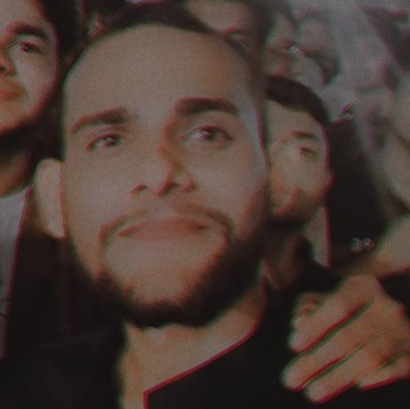

Tanujay Singh
Full Stack Web Developer
Objective:
To obtain a challenging job in the organization where
I can utilize my technical skills and conceptual knowledge to contribute to the growth of organization.
Education:
- Pursuing MCA from United Institute Of Management(1st Year)
Affiliated to AKTU, Lucknow
- Graduated in Bachelor's Of Arts from PRSU
- Intermediate from CBSE Board
- High School from CBSE Board
Skills:
- Languages: C, C++, Javascript, SQL, JAVA
- Frameworks: NodeJS
- Web Technologies: HTML, CSS, Bootstrap, Jquery, MongoDB, ExpressJS
- Platforms: Web, Windows
- Soft Skills: Responsible, Diligent, Writing, Public Speaking, Time Management
Other:
My Hobbies
Contact Me